<!doctype html><html lang="zh-Hant"><head><meta charset="utf-8"><meta name="viewport" content="width=device-width,initial-scale=1"><title>惡魔輪盤</title>
<style>
:root{--bg:#1d2833;--ink:#e9e5d8;--dim:#93a4b4;--live:#d4a63c;--blank:#9fb6cc;--card:#27364a;--line:#3b4d63}
*{box-sizing:border-box}body{margin:0;background:var(--bg);color:var(--ink);font:16px/1.6 "Noto Sans TC",system-ui,sans-serif}
main{max-width:480px;margin:0 auto;padding:16px 16px 32px}h1{font-size:30px;margin:24px 0 8px}p{margin:8px 0;color:var(--dim)}
button{font:inherit;color:var(--ink);background:var(--card);border:2px solid var(--line);border-radius:10px;padding:14px;width:100%;margin:6px 0;cursor:pointer}
button.main{background:var(--live);color:#1d2833;border-color:var(--live);font-weight:700}button:disabled{opacity:.4}button:focus-visible{outline:3px solid var(--blank)}
.hud{display:grid;grid-template-columns:repeat(4,1fr);gap:8px;text-align:center}.hud div{background:var(--card);border-radius:8px;padding:8px 2px;font-size:13px;color:var(--dim)}.hud b{display:block;font-size:20px;color:var(--ink);min-height:30px}
.sh{display:flex;flex-wrap:wrap;gap:8px;margin:16px 0 4px;min-height:30px}.sh i{width:28px;height:28px;border-radius:50%}.L{background:var(--live)}.B{border:3px solid var(--blank)}
.bar{height:6px;background:var(--card);border-radius:3px;overflow:hidden}.bar span{display:block;height:100%;background:var(--live)}
#msg{min-height:60px;padding:10px 0;color:var(--ink)}.opt button{display:inline-block;width:auto;padding:8px 14px;margin:4px 4px 4px 0}.opt .on{background:var(--live);color:#1d2833}
table{border-collapse:collapse;width:100%;font-size:14px}td,th{border-bottom:1px solid var(--line);padding:4px;text-align:right}

.stage{position:fixed;inset:0;z-index:5;overflow:hidden;background:#000;display:grid;place-items:center}
/* 橫式（電腦）版面 16:9；直式（手機）版面 9:19。數值都是相對於 .world 的百分比 */
.world{position:relative;overflow:hidden;width:min(100vw,177.78vh);width:min(100vw,177.78dvh);aspect-ratio:16/9;
 --bg:url(assets/bg_pc.png);--dw:41.67%;--dt:3.7%;--oy:32.5%;--tw:57.3%;--tt:21.3%;--g1h:78%;--g1x:-2%;--g1b:-5%;--g2h:80%;--g2x:16.3%;--g2b:-.3%;--g3h:60%;--gy:-41%;--mw:20%;--mb:13%;--is:3.1cqw}
@media(max-aspect-ratio:1/1){.world{width:min(100vw,47.37vh);width:min(100vw,47.37dvh);aspect-ratio:9/19;
 --bg:url(assets/bg_phone.png);--dw:120.4%;--dt:16.27%;--oy:25%;--tw:112%;--tt:39.43%;--g1h:56%;--g1x:15%;--g1b:-8.4%;--g2h:60%;--g2x:39%;--g2b:0%;--g3h:42%;--gy:-38%;--mw:46%;--mb:9%;--is:3.7cqw}}
.scene{position:absolute;inset:0;perspective:700px;background:#8c8c8c var(--bg) center/100% 100% no-repeat}
.dvs{position:absolute;left:50%;top:var(--dt);width:var(--dw);aspect-ratio:1;translate:-50% 0}.dvs img,.dvs svg{position:absolute;inset:0;width:100%;height:100%}.dv{position:absolute;inset:0;-webkit-mask-image:linear-gradient(#000 84%,transparent 96%);mask-image:linear-gradient(#000 84%,transparent 96%)}
.dh{transform-origin:49% 51%;animation:nod 5s ease-in-out infinite}@keyframes nod{0%,100%{rotate:-1.2deg}50%{rotate:1.2deg}}
.tb{position:absolute;left:50%;top:var(--tt);width:var(--tw);aspect-ratio:1;translate:-50% 0;z-index:1;container-type:inline-size;color:#111}
.tb img{position:absolute;inset:0;width:100%;height:100%}
.n{position:absolute;top:52.9%;translate:-50% -50%;transform:skewX(14deg);font-weight:800;font-size:5.6cqw;line-height:1;font-variant-numeric:tabular-nums}
#vb{left:71.2%}#vl{left:80.6%;color:#c0392b}.hp{position:absolute;display:flex;gap:1.2cqw;translate:-50% -50%}.tb .hp img{position:static;width:auto;height:100%}.hp .lost{opacity:.2;filter:grayscale(1)}.hpd{left:50%;top:41.6%;height:3.6cqw}.hpm{left:12.5%;top:64%;height:6.2cqw;translate:0 -50%}
.inf{position:absolute;left:25.5%;top:51%;width:24%;translate:-50% -50%;display:flex;flex-direction:column;align-items:center;font-size:3.5cqw;font-weight:800;line-height:1.45;white-space:nowrap;text-align:center}.inf i{font-style:normal;color:#c0392b}
.dh.eo{animation:nod 5s ease-in-out infinite,bo 4.6s steps(1) infinite}.dh.ec{opacity:0;animation:nod 5s ease-in-out infinite,bc 4.6s steps(1) infinite}@keyframes bo{0%{opacity:1}96%,100%{opacity:0}}@keyframes bc{0%{opacity:0}96%,100%{opacity:1}}
.dv{transform-origin:50% 60%;animation:idle 3s ease-in-out infinite}
.gw{position:absolute;inset:0;z-index:2;transform-origin:50% 100%;pointer-events:none}
.gw>div{position:absolute;inset:0;display:flex;align-items:flex-end;justify-content:center;opacity:0}.gw img{display:block;position:relative;width:auto}
.w1 img{height:var(--g1h);left:var(--g1x);margin-bottom:var(--g1b)}.w2 img{height:var(--g2h);left:var(--g2x);margin-bottom:var(--g2b)}.w3 img{height:var(--g3h)}
.gw .w1{opacity:1}.pf .w1,.ps .w1{opacity:0}.pf .w2{opacity:1}.ps .w3{opacity:1}
.a-selfl .w3{animation:hidew .01s .2s forwards}.a-selfl .w1{opacity:1}.a-selfl .w1 img{animation:gunrise .6s 1.85s both}@keyframes gunrise{from{transform:translateY(75%)}}
.w1 img{animation:sway 4s ease-in-out infinite}@keyframes sway{50%{translate:0 -6px}}
.aim-dev .w2 img{animation:adn .5s ease-out both,tr .12s .5s infinite alternate}.aim-self .w3 img{animation:asn .5s ease-out both,tr .12s .5s infinite alternate}
@keyframes adn{from{transform:translate(12%,14%)}}@keyframes asn{from{transform:translateY(60%)}}@keyframes rc{30%{transform:translate(-3%,4%) rotate(-2deg)}}@keyframes rcs{30%{transform:translateY(6%)}}
.ov{position:fixed;inset:0;pointer-events:none;opacity:0;z-index:9}
.top{position:absolute;top:0;left:0;right:0;padding:8px 12px;text-align:center;font-size:14px;z-index:4;text-shadow:0 1px 3px #000}.top .bar{height:5px;margin:4px 0;background:#0008;border-radius:3px;overflow:hidden}.top .bar span{display:block;height:100%;background:var(--live)}
#msg{position:absolute;left:3%;bottom:var(--mb);max-width:var(--mw);padding:6px 10px;background:#000b;border-radius:8px;z-index:4;min-height:0;font-size:14px}#msg:empty{display:none}
.btns{position:absolute;left:10px;right:10px;bottom:10px;display:flex;gap:10px;z-index:6}.btns button{margin:0}
.blood{position:absolute;inset:0;z-index:3;pointer-events:none;opacity:0;background:
 radial-gradient(ellipse 22% 13% at 0 0,rgba(140,0,0,.7),transparent),radial-gradient(ellipse 18% 11% at 100% 3%,rgba(130,0,0,.65),transparent),
 radial-gradient(ellipse 20% 12% at 2% 100%,rgba(140,0,0,.7),transparent),radial-gradient(ellipse 22% 13% at 100% 98%,rgba(135,0,0,.7),transparent),
 radial-gradient(ellipse 9% 16% at 0 46%,rgba(130,0,0,.5),transparent),radial-gradient(ellipse 8% 14% at 100% 60%,rgba(130,0,0,.5),transparent),radial-gradient(ellipse 26% 5% at 44% 0,rgba(130,0,0,.5),transparent),
 radial-gradient(ellipse 60% 57% at 50% 50%,transparent 56%,rgba(140,0,0,.34) 82%,rgba(115,0,0,.66) 100%)}
.blood.stay{animation:bin .4s both,bpu 2.4s ease-in-out infinite}.blood.fade{animation:bfd 6s both}
@keyframes bin{from{opacity:0}to{opacity:1}}@keyframes bpu{50%{filter:opacity(.7)}}@keyframes bfd{0%{opacity:0}5%,40%{opacity:1}100%{opacity:0}}
@keyframes idle{50%{translate:0 -4px}}@keyframes fl{0%{opacity:1}100%{opacity:0}}@keyframes fb{0%{opacity:1;transform:scale(1)}100%{opacity:0;transform:scale(5)}}
@keyframes ck{50%{translate:0 6px}}@keyframes tr{to{translate:1px 1.5px}}@keyframes ln{50%{transform:scale(1.15)}}
@keyframes ad{from{transform:translateX(var(--gx)) translateY(40%) rotate(-24deg)}to{transform:translateX(var(--gx)) rotate(-24deg) scale(1.04)}}@keyframes as{from{transform:translateY(70%)}to{transform:translateY(6%) rotateX(10deg)}}
@keyframes ret{0%,1.6%{opacity:1;clip-path:none;filter:brightness(2.3) contrast(.75) sepia(.25)}1.7%,47.7%{opacity:0}47.8%{opacity:1;clip-path:circle(0% at 49% 36%);filter:brightness(0);transform:scale(.6);animation-timing-function:linear}73.2%{opacity:1;clip-path:circle(38% at 49% 36%);filter:brightness(.45);transform:scale(.86);animation-timing-function:ease-out}100%{opacity:1;clip-path:circle(85% at 49% 36%);filter:brightness(1);transform:none}}@keyframes hands{0%,18%{opacity:0;translate:0 50px;scale:.7}26%{opacity:1;translate:0 0;scale:1}85%{opacity:1}100%{opacity:0}}@keyframes shade{0%{opacity:0}10%,60%{opacity:.92}100%{opacity:0}}
@keyframes bk{0%,76.7%{opacity:1}100%{opacity:0}}@keyframes gl{0%,98%{opacity:1}100%{opacity:0}}@keyframes gld{0%,17%{opacity:1}100%{opacity:0}}@keyframes fm{0%{opacity:1;transform:scale(1)}100%{opacity:0;transform:scale(2.5)}}@keyframes gone{to{opacity:0}}.gone{animation:gone .2s forwards}
@keyframes rd{0%{opacity:.6}100%{opacity:0}}@keyframes sh{20%{translate:-6px 0}40%{translate:6px 0}60%{translate:-4px 0}80%{translate:3px 0}}
.a-hitd .dv{transform-origin:49% 36%;animation:ret 3.1s both}.a-hitd .scene{animation:sh .4s .05s}.a-selfl .ov{background:#000;animation:bk 2.4s both}
.a-selfl .scene{animation:sh .4s .05s}
.a-clkd .w2 img,.a-selfb .w3 img{animation:ck .3s}.a-hitd .w2 img{animation:rc .25s}.a-selfl .w3 img{animation:rcs .25s}.dhs{position:absolute;left:50%;top:var(--dt);width:var(--dw);aspect-ratio:1;translate:-50% 0;z-index:1;pointer-events:none}.dhs img{position:absolute;inset:0;width:100%;height:100%}.h1{transform-origin:53.4% 64.9%;transform:translate(-2.2%,11.3%) scale(.946)}.h2{transform-origin:41.5% 57.8%;transform:translate(-7.95%,-.5%) scale(1.5)}.pa{transform-origin:48.7% 57.6%}.pal{transform:translate(1.1%,32.1%) scale(.64)}.par{transform:translate(3.5%,32.1%) rotate(-10deg) scaleX(-1) scale(.64)}.a-clkd .pa{animation:pfo .3s forwards}.a-hitd .pa{opacity:0;animation:pfi 3.1s both}@keyframes pfo{to{opacity:0}}@keyframes pfi{0%,90%{opacity:0}100%{opacity:1}}.hnd{opacity:0;transform:translate(-23.4%,10.8%) scale(1.05)}.hr{transform:scaleX(-1) translate(-23.4%,10.8%) scale(1.05)}.a-hitd .hnd{animation:hnd 3.1s both}@keyframes hnd{0%,12.9%{opacity:0;filter:brightness(0);scale:.45;translate:0 -14%}51%{opacity:1;filter:brightness(.55);scale:.8;translate:0 -4%}63.9%{opacity:1;filter:brightness(1);scale:1;translate:0 0}87%{opacity:1;filter:brightness(1);scale:1;translate:0 0}100%{opacity:0;filter:brightness(1);scale:1;translate:0 0}}.ph{position:absolute;inset:0}.p1{animation:ph1 2.1s forwards}.p2{opacity:0;animation:ph1 1.5s 2.1s forwards}.p3{opacity:0;animation:ph3 .01s 3.6s forwards}@keyframes ph1{0%,99%{opacity:1}100%{opacity:0}}@keyframes ph3{to{opacity:1}}
.kill .dv{animation:vanish .05s forwards}.a-hitd.kill .dk{animation:dkk .3s both}.kill .hnd,.kill .pa{display:none}@keyframes vanish{0%,99%{opacity:1;filter:brightness(2.3) contrast(.75) sepia(.25)}100%{opacity:0}}.dv .dh:not(.eb){filter:brightness(.8)}.fpost{opacity:0;animation:ph3 .01s .1s forwards}.fpre{animation:gone2 .01s .1s forwards}@keyframes gone2{to{opacity:0}}@keyframes dkk{to{opacity:.9}}
.a-ent .dv{animation:ent 3.1s both}.a-ent .dk{animation:dke 3.2s both}.a-ent .hnd{animation:hnd 3.1s both}.a-ent .pa{opacity:0;animation:pfi 3.1s both}@keyframes dke{0%,30%{opacity:.9}100%{opacity:0}}@keyframes ent{0%,47.7%{opacity:0}47.8%{opacity:1;clip-path:circle(0% at 49% 36%);filter:brightness(0);transform:scale(.6);animation-timing-function:linear}73.2%{opacity:1;clip-path:circle(38% at 49% 36%);filter:brightness(.45);transform:scale(.86);animation-timing-function:ease-out}100%{opacity:1;clip-path:circle(85% at 49% 36%);filter:brightness(1);transform:none}}
.fin.clr{background:transparent;z-index:8}.fin.clr.out{animation:ifo .5s both}.fin.clr h1,.fin.clr p{text-shadow:0 2px 8px #000}
.itm{position:absolute;left:50%;translate:-50% 0;bottom:calc(3% + 58px);z-index:6;margin:0;width:auto;padding:8px 16px;font-size:15px;white-space:nowrap}
.pk{border-radius:999px;background:#000c;color:#eee;border:2px solid #888}.pk.lv{border-color:#c0392b;color:#ffb3a8}.pk.lv b{color:#ff5a46}.pk.bk b{color:#fff}
@media(max-aspect-ratio:1/1){.itm{bottom:70px}}
.tg{display:flex;gap:10px;align-items:center;margin:14px 0;padding:10px 14px;border:2px dashed var(--line);border-radius:12px;cursor:pointer}.tg input{width:22px;height:22px;margin:0}
.intro{position:fixed;inset:0;z-index:20;background:transparent;display:grid;place-items:center;overflow:hidden}
.iw{position:relative;width:min(100vw,177.78vh);aspect-ratio:16/9;overflow:hidden;container-type:inline-size;color:#eee}
.cam{position:absolute;inset:0;transform-origin:0 0;perspective:2200px;perspective-origin:73% 52%}
.cam>img{position:absolute;inset:0;width:100%;height:100%;pointer-events:none;transition:filter .25s}
.iext{position:absolute;left:100%;top:0;width:36.5%;height:100%}
.hole{position:absolute;left:61.6%;top:22.7%;width:23.3%;height:59.5%;background:radial-gradient(ellipse at 50% 45%,#141414,#000 70%)}
.leaf{transform-origin:61.6% 50%}
.hsp{position:absolute;background:none;border:0;padding:0;margin:0;width:auto;cursor:pointer;border-radius:1cqw}
.hsp:focus-visible{outline:3px solid #ffd27a;outline-offset:4px}
.sgl{opacity:0;transition:opacity .25s}.sgl.on{opacity:1;filter:drop-shadow(0 0 1.1cqw #ffcf70)}.sg.dim{filter:brightness(.6)}
body.portal,body.portal2{background:#000}.iw.quick{animation:ifo .5s both}body.qin .stage{animation:ifade .7s both}
/* 開門轉場時只留背景、桌子、惡魔；轉場結束後其他東西才浮現，槍從下面舉上來 */
body.portal .top,body.portal .bar,body.portal #msg,body.portal .btns,body.portal .itm,body.portal .tb .inf,body.portal .tb .n,body.portal .tb .hp,body.portal .blood,body.portal .gw{opacity:0!important}
@keyframes ifade{from{opacity:0}}@keyframes gunup{from{transform:translateY(60%)}}body.portal .stage{transform:scale(.75)}body.portal2 .stage{transform:none;transition:transform .9s ease-in}
.stx{position:absolute;inset:0;font-size:1.35cqw;line-height:1;color:#141414;font-weight:700;pointer-events:none;transition:opacity .25s}.sl{position:absolute;white-space:nowrap;transform-origin:0 50%;translate:0 -50%}
.stx.dim{opacity:.55}
.itog{position:absolute;left:48%;top:55%;translate:-50% -50%;width:auto;margin:0;padding:.6cqw 1.2cqw;font-size:1.05cqw;display:flex;gap:.8cqw;align-items:center;background:#262626;color:#ddd;border:.2cqw solid #111;border-radius:.6cqw;box-shadow:0 .3cqw 0 #0008}
.itog i{width:1cqw;height:1cqw;border-radius:50%;background:#555;box-shadow:inset 0 0 .3cqw #000}.itog.on i{background:#ffd24a;box-shadow:0 0 .8cqw #ffd24a}
.imeta{position:absolute;right:1.5%;top:2%;display:flex;gap:.8cqw;align-items:center;font-size:.95cqw;color:#bbb}
.imeta button{width:auto;margin:0;padding:.35cqw .9cqw;font-size:.95cqw}
.ihint{position:absolute;left:0;right:0;bottom:3%;text-align:center;font-size:1.3cqw;color:#ddd;text-shadow:0 .2cqw .5cqw #000;pointer-events:none}
.ihint.warn{color:#ffb3a8;animation:fin .3s}
.ready .leaf{animation:dglow 1.6s ease-in-out infinite}@keyframes dglow{50%{filter:brightness(1.3) drop-shadow(0 0 1cqw #ffd27a)}}
.shake .leaf{animation:ishake .35s}@keyframes ishake{25%{translate:-.4% 0}75%{translate:.4% 0}}
.go .fo{animation:ifo .5s both;pointer-events:none}@keyframes ifo{to{opacity:0}}
.go .cam{animation:izoom 1s .4s both,ipush .9s 2.4s forwards}
@keyframes izoom{from{transform:none}to{transform:translate(-48.8%,-20.7%) scale(1.35)}}
@keyframes ipush{from{transform:translate(-48.8%,-20.7%) scale(1.35)}to{transform:translate(-302.3%,-203.4%) scale(4.8)}}
.go .leaf{animation:iopen .9s 1.5s both}@keyframes iopen{to{transform:rotateY(80deg);filter:brightness(.55)}}

.vol{position:fixed;left:10px;bottom:10px;z-index:40;display:flex;align-items:center;gap:6px;padding:5px 9px;border-radius:999px;background:#000a;color:#ddd;font-size:12px;opacity:.55;transition:opacity .2s}
.vol:hover,.vol:focus-within{opacity:1}.vol button{width:28px;height:28px;margin:0;padding:0;display:grid;place-items:center;background:none;border:0;color:inherit}
.vol input{width:90px;margin:0;accent-color:#d9b44a}.vol span{min-width:34px;text-align:right;font-variant-numeric:tabular-nums}
.quit{position:absolute;right:1.2%;top:5%;z-index:7;width:auto;margin:0;padding:6px 14px;font-size:14px;background:#000b;color:#ddd;border:1px solid #666;border-radius:8px}.quit.cf{background:#7a1c12;color:#fff;border-color:#e0533f}.quit.tu{background:#c0392b;color:#fff;border-color:#ffb3a8;font-weight:700;animation:tup 1s ease-in-out infinite}@keyframes tup{50%{box-shadow:0 0 14px #ff6b55}}
body.portal .quit{opacity:0!important}
.hh{opacity:0}.r-live .h1,.r-blank .h1{animation:hh1 2.1s both,grab .45s .35s ease-in-out both}@keyframes grab{from{translate:37% 20%;scale:2.2}to{translate:0 0;scale:1}}.r-live .h2,.r-blank .h2{animation:hh2 .01s 2.1s forwards}.r-blank .h2{animation:hh2 .01s 2.1s forwards,ck .3s 3.6s}@keyframes hh1{0%,16.6%{opacity:0}16.7%,99.9%{opacity:1}100%{opacity:0}}@keyframes hh2{to{opacity:1}}.r-live .w2,.r-blank .w2{animation:hidew .01s .35s forwards}@keyframes hidew{to{opacity:0}}
.r-live .dv,.r-blank .dv{animation:none}.r-live .dh,.r-blank .dh{animation:tilt .4s 2.1s ease-out forwards}@keyframes tilt{to{rotate:-4deg}}.ov.on{background:#000;animation:bk 2.4s both}.r-live .scene{animation:sh .4s 3.65s}
.dk{position:absolute;inset:0;background:#000;opacity:0;pointer-events:none}.a-hitd .dk{animation:dk 2.6s both}.a-hitd .tb,.a-hitd .gw{animation:glo .1s both}@keyframes dk{0%,38%{opacity:.9}100%{opacity:0}}@keyframes glo{0%,95%{filter:brightness(2.4) drop-shadow(0 0 14px #ffe9b0)}100%{filter:none}}
.shade{position:absolute;inset:-8%;background:radial-gradient(circle at 50% 56%,#000 0,#000 40%,transparent 68%);opacity:0}.hd{opacity:0;fill:#fff;stroke:#111;stroke-width:1.2;transform-box:fill-box;transform-origin:50% 100%}
.gl{position:fixed;translate:-50% -50%;opacity:0;z-index:10;pointer-events:none}.gl svg{display:block;width:100%;height:100%;overflow:visible}.gl.go{animation:gl .05s linear both}.gl.gd{animation:gld .3s both}
@media(prefers-reduced-motion:reduce){.ov{display:none}.stage *{animation:none!important}}
label{display:block;margin-top:16px;color:var(--dim)}input{font:inherit;color:var(--ink);background:var(--card);border:2px solid var(--line);border-radius:10px;padding:14px;width:100%;margin:6px 0}input:focus-visible{outline:3px solid var(--blank)}#ne{color:#e0584a;min-height:1.6em}
@media(min-aspect-ratio:1/1){.btns{right:auto;width:34%;left:50%;translate:-50% 0;bottom:3%}}
.fin{position:fixed;inset:0;z-index:5;background:#000;display:grid;place-items:center;text-align:center;padding:24px}.fin>div{width:min(100%,420px);animation:fin 1s both}.fin.slow>div{animation:fin 2.5s .5s both}.fin h1{margin:0 0 12px}@keyframes fin{from{opacity:0}}
h2{font-size:18px;margin:20px 0 4px}.md{border:2px solid var(--line);border-radius:12px;padding:12px 14px;margin:10px 0}.md p{margin:4px 0 8px}
body::after{content:'';position:fixed;inset:-50%;z-index:30;pointer-events:none;opacity:.22;mix-blend-mode:overlay;background:url("data:image/svg+xml,%3Csvg xmlns='http://www.w3.org/2000/svg' width='220' height='220'%3E%3Cfilter id='n'%3E%3CfeTurbulence type='fractalNoise' baseFrequency='.9' numOctaves='2' stitchTiles='stitch'/%3E%3CfeColorMatrix values='3 0 0 0 -1 3 0 0 0 -1 3 0 0 0 -1 0 0 0 0 1'/%3E%3C/filter%3E%3Crect width='100%25' height='100%25' filter='url(%23n)'/%3E%3C/svg%3E");animation:grain 1.4s steps(4) infinite}@keyframes grain{0%{translate:0 0}25%{translate:-7% 4%}50%{translate:5% -6%}75%{translate:-3% -8%}100%{translate:8% 3%}}@media(prefers-reduced-motion:reduce){body::after{animation:none}}
</style></head><body><main id="app"></main><script>
const C={ver:'v4',lv:[{L:2,B:3,hp:2,hc:1},{L:3,B:3,hp:2,hc:2},{L:4,B:4,hp:2,hc:3}],a:10,b:5,d:5,bonus:10,T:10,G:300,
 /* 表情設定：eyes=眼眶編號, ball=眼珠檔名(閉眼不用寫), mouth=嘴巴編號, blush=腮紅編號(不要就不寫)；陣列依序是第 1、2、3 關
    腮紅依嘴巴自動決定（見 BL）：嘴巴 3 配腮紅 2，嘴巴 8 不加腮紅，其他嘴巴都配腮紅 1。嘴巴 4、5、6、8 只在第 3 關用。 */
 faces:{idle:[{eyes:1,mouth:1},{eyes:2,ball:'eyeballs_for_eyes2',mouth:2},{eyes:3,ball:'eyeballs2',mouth:3}],
  aimed:{eyes:2,ball:'eyeballs_for_eyes2',mouth:1},
  act:[{eyes:2,ball:'eyeballs_for_eyes2'},{eyes:2,ball:'eyeballs_for_eyes2'},{eyes:3,ball:'eyeballs2'}],
  take:[{mouth:1},{mouth:2},{mouth:4}],point:[{mouth:1},{mouth:2},{mouth:5}],
  miss:[{mouth:1},{mouth:1},{mouth:6}],hit:{mouth:3},nerv:{mouth:8}},
 url:'https://script.google.com/macros/s/AKfycbwpQF69NCR2YVLQgtMTPO8CO8LypDr1MK4neOl6ox1TtpX0gWgwRTXg-Do628IOnXKI/exec',
 /* 備份用的第二個 Apps Script 網址（另一份試算表）。留空就只送主要的。 */
 url2:'https://script.google.com/macros/s/AKfycby4Ujs1uRNjeFYpmxLrLxBYCFu49iZYbyf4Q09Ktf4OjF7rdDHqJFbxKYz-iP6KiNdPMQ/exec' /* 把 Apps Script 網頁應用程式網址貼在這裡 */};
const COLS=['ts','gid','name','pid','seq','ver','src','type','level','shot_no','live_left','blank_left','hp','hc','score_before','actor','action','result','score_after','dec_time','timeout','end_reason','final_score','levels_cleared','total_time','diff','replay','fun','device','risk','params','item_mode','peeked','item_left'];
/* ---- 可調參數：每局開始時從試算表的 config 分頁讀取；讀不到或不合格就用這裡的內建預設 ---- */
const KEYS=['L1_live','L1_blank','L1_hp','L1_hc','L2_live','L2_blank','L2_hp','L2_hc','L3_live','L3_blank','L3_hp','L3_hc','a','b','d','bonus','T'];
const mk=v=>Object.fromEntries(KEYS.map((k,i)=>[k,v[i]]));
const DEF={low:Object.assign(mk([2,3,2,1, 3,3,2,2, 4,4,2,3, 10,5,5,10,10]),{items:1}),high:Object.assign(mk([2,3,1,1, 3,3,1,2, 4,4,1,3, 20,10,10,20,10]),{items:1})};
let CFG={low:DEF.low,high:DEF.high,src:{low:'default',high:'default'}},cfgP=Promise.resolve(),risk='',params='';
function valid(p){if(!p||!KEYS.every(k=>Number.isInteger(p[k])))return false;
 for(let i=1;i<=3;i++){const L=p['L'+i+'_live'],B=p['L'+i+'_blank'],hp=p['L'+i+'_hp'],hc=p['L'+i+'_hc'];
  if(L<1||B<1||hp<1||hc<1||hp>5||hc>5||L+B>12||L<hp+hc-1)return false}   /* 實彈數至少要是雙方生命和 −1，關卡才一定打得完 */
 return['a','b','d','bonus'].every(k=>p[k]>=0&&p[k]<=100)&&p.T>=3&&p.T<=30&&Number.isInteger(p.items)&&p.items>=0&&p.items<=5}
function loadCfg(){if(!C.url)return Promise.resolve();
 return fetch(C.url+'?t='+Date.now()).then(r=>r.json()).then(j=>{const o={src:{}};['low','high'].forEach(m=>{if(j[m]&&j[m].items==null)j[m].items=1});/* 舊的 config 分頁沒有 items 這一列時，預設每關 1 次 */['low','high'].forEach(m=>{const ok=valid(j[m]);o[m]=ok?j[m]:DEF[m];o.src[m]=ok?'sheet':'default'});CFG=o}).catch(()=>{})}
function apply(m){const p=CFG[m];C.lv=[1,2,3].map(i=>({L:p['L'+i+'_live'],B:p['L'+i+'_blank'],hp:p['L'+i+'_hp'],hc:p['L'+i+'_hc']}));
 C.a=p.a;C.b=p.b;C.d=p.d;C.bonus=p.bonus;C.T=p.T;C.items=p.items;risk=m;params=CFG.src[m]+'|'+KEYS.map(k=>p[k]).join(',')+',items='+p.items}
const TH={A:{0:.1,15:.9},B:{0:.2,5:.1,15:.3,20:.1,25:.1,35:.1,45:.1}};
const $=q=>document.querySelector(q),app=$('#app');
const ls={get:k=>{try{return JSON.parse(localStorage.getItem(k))}catch(e){return null}},set:(k,v)=>{try{localStorage.setItem(k,JSON.stringify(v))}catch(e){}}};
let name=ls.get('bk_name')||'',IT=!!ls.get('bk_item'),itemMode='';/* IT：開始畫面的道具開關 */
const twTime=()=>new Date(Date.now()+288e5).toISOString().replace('T',' ').slice(0,19);/* 台灣時間 UTC+8 */const esc=x=>String(x).replace(/[&<>"']/g,c=>'&#'+c.charCodeAt(0)+';');
let pid=ls.get('bk_pid');if(!pid){pid='P'+Math.random().toString(36).slice(2,8);ls.set('bk_pid',pid)}
/* ---- 遊戲引擎（模擬模式共用）---- */
const shuf=(n,l)=>{const a=Array.from({length:n},(_,i)=>i<l?1:0);for(let i=n-1;i>0;i--){const j=Math.random()*(i+1)|0;[a[i],a[j]]=[a[j],a[i]]}return a};
const left=s=>{const r=s.sh.slice(s.i),l=r.reduce((x,y)=>x+y,0);return[l,r.length-l]};
const newLevel=(n,score)=>{const c=C.lv[n-1];return{n,sh:shuf(c.L+c.B,c.L),i:0,hp:c.hp,hc:c.hc,score}};
function shoot(s,act){const ev=[],take=()=>s.sh[s.i++];const x=take();
 if(act==='s'){if(x)s.hp--;else s.score+=C.a;ev.push({actor:'player',tgt:'self',x,sc:s.score})}
 else if(x){s.hc--;s.score+=C.b;ev.push({actor:'player',tgt:'computer',x,sc:s.score})}
 else{s.score=Math.max(0,s.score-C.d);ev.push({actor:'player',tgt:'computer',x,sc:s.score});
  if(s.i<s.sh.length){const r=take();if(r)s.hp--;ev.push({actor:'computer',tgt:'player',x:r,sc:s.score})}}
 return ev}
const state=s=>s.hp<=0?'dead':s.hc<=0?'clear':'';
const fin=s=>{const r=state(s);if(r==='clear')s.score+=C.bonus;return r};
const bot={A:()=>'c',B:s=>s.hp===2&&left(s)[1]>0?'s':'c'};
/* ---- 紀錄：每發即時存本機並分批送出 ---- */
let seq=0,gid='',busy=0,busy2=0;const all=ls.get('bk_all')||[];let out=ls.get('bk_out')||[],out2=ls.get('bk_out2')||[];
function log(type,o){const r=Object.assign({ts:twTime(),gid,pid,name,risk,params,item_mode:itemMode,seq:++seq,ver:C.ver,src:'human',type,device:/Mobi|Android|iPhone/.test(navigator.userAgent)?'phone':'pc'},o);all.push(r);out.push(r);ls.set('bk_all',all);ls.set('bk_out',out);if(C.url2){out2.push(r);ls.set('bk_out2',out2)}}
/* 主要與備份各有自己的待送佇列：一邊連不上不會擋到另一邊 */
function send(u,get,done,beacon,isBusy,setBusy){const q=get();if(!u||!q.length)return;const b=JSON.stringify(q),n=q.length;
 if(beacon&&navigator.sendBeacon){if(navigator.sendBeacon(u,new Blob([b],{type:'text/plain'})))done(n);return}
 if(isBusy())return;setBusy(1);fetch(u,{method:'POST',mode:'no-cors',headers:{'Content-Type':'text/plain'},body:b}).then(()=>done(n)).catch(()=>{}).finally(()=>setBusy(0))}
function flush(beacon){
 send(C.url,()=>out,n=>{out=out.slice(n);ls.set('bk_out',out)},beacon,()=>busy,v=>busy=v);
 send(C.url2,()=>out2,n=>{out2=out2.slice(n);ls.set('bk_out2',out2)},beacon,()=>busy2,v=>busy2=v)}
/* 補送校驗：無法得知試算表那邊有沒有寫入成功，所以在每關開始、每局結束、下次打開時，把這一局的紀錄整批再送一次；
   試算表用 key（局代號|序號|事件類型）去重，重複的不會多寫，之前漏掉的就會補上 */
function resend(g){if(!g)return;const k=r=>r.gid+'|'+r.seq+'|'+r.type,rows=all.filter(r=>r.gid===g);
 const add=(q,key)=>{const have=new Set(q.map(k));rows.forEach(r=>{if(!have.has(k(r)))q.push(r)});ls.set(key,q)};
 if(C.url)add(out,'bk_out');if(C.url2)add(out2,'bk_out2')}
setTimeout(()=>{const g=[...new Set(all.slice(-400).map(r=>r.gid))].slice(-3);g.forEach(resend)},1500);/* 打開時補送最近 3 局 */
setInterval(()=>flush(),3000);
document.addEventListener('visibilitychange',()=>{if(document.hidden)flush(true)});addEventListener('pagehide',()=>flush(true));
function csv(){const q=v=>{v=v==null?'':String(v);return/[",\n]/.test(v)?'"'+v.replace(/"/g,'""')+'"':v};
 const t=[COLS.join(',')].concat(all.map(r=>COLS.map(c=>q(r[c])).join(','))).join('\n'),a=document.createElement('a');
 a.href=URL.createObjectURL(new Blob(['\ufeff'+t],{type:'text/csv'}));a.download='bk_'+pid+'.csv';a.click()}
/* ---- 畫面與流程 ---- */
/* 試玩時間：每位玩家（玩家代號）從第一局開始算 C.G 秒，可以玩很多局；時間到就強制結束，換玩家才重算 */
let sess=ls.get('bk_sess'),inGame=0;
const sessLeft=()=>sess&&sess.pid===pid?C.G*1000-(Date.now()-sess.t0):C.G*1000,sessOver=()=>sess&&sess.pid===pid&&sessLeft()<=0;
const mmss=ms=>{const t=Math.max(0,Math.ceil(ms/1000));return Math.floor(t/60)+':'+String(t%60).padStart(2,'0')};
/* 時間到不自動結束：只把右上角按鈕變成「時間到・結束遊戲」，讓玩家打完這一發，由現場按按鈕結束 */
const tuMark=()=>{const b=$('#bq');if(b&&sessOver()&&!b.classList.contains('tu')){b.classList.add('tu');b.classList.remove('cf');b.textContent='時間到・結束遊戲'}};
setInterval(()=>{if(inGame&&!quitted)tuMark()},250);
let quitted=0,s,t0=0,tm=null,gno=ls.get('bk_n')||0,gt=0,shot=0,cleared=0;
function askName(){closeIntro();const chg=!!name;app.innerHTML=`<h1>惡魔輪盤</h1><p>${chg?'換一位玩家試玩：按確定後會產生新的玩家代號，之後的紀錄都算成另一位玩家；就算名字一樣也分得開。只是要修改錯字就按取消，不會換人。':'請輸入你的名字或暱稱，這台裝置只需要輸入一次。'}</p><label for=nm>名字</label><input id=nm maxlength=20 autocomplete=off><p id=ne role=alert></p><button class=main id=nok>確定</button>${chg?'<button id=nno>取消</button>':''}`;
 $('#nm').value=name;const go=()=>{const v=$('#nm').value.trim();if(!v){$('#ne').textContent='請先輸入名字。';return}
  if(chg){pid='P'+Math.random().toString(36).slice(2,8);ls.set('bk_pid',pid);gno=0;ls.set('bk_n',0)}
  name=v;ls.set('bk_name',v);home()};$('#nok').onclick=go;if(chg)$('#nno').onclick=home;$('#nm').onkeydown=e=>{if(e.key==='Enter')go()};$('#nm').focus()}
function home(){if(!name)return askName();app.onclick=null;clearInterval(tm);const wide=innerWidth>innerHeight;wide?intro():showHome();cfgP=loadCfg().then(()=>{if($('#golow'))showHome();if($('.intro'))signText()})}
/* ---- 電腦版開場：牌子選模式、開關選道具、按門進入 ---- */
let pick='';
/* 牌子下半部的說明文字：每一行各自傾斜，貼合牌子的透視（座標以 1920×1080 為準：左端、右端各自從上到下的範圍） */
const SG={low:{x0:135,x1:560,L:[270,430],R:[300,412]},high:{x0:135,x1:560,L:[680,855],R:[610,725]}};
const sDesc=m=>{const p=CFG[m];return[`生命 ${p.L1_hp}／${p.L2_hp}／${p.L3_hp}`,`射自己空彈 +${p.a}`,`射惡魔實彈 +${p.b}　空彈 −${p.d}`,`過關 +${p.bonus}　每發 ${p.T} 秒`]};
function signText(){['low','high'].forEach(m=>{const e=$('#t'+m);if(!e)return;const g=SG[m],t=sDesc(m),n=t.length;
 e.innerHTML=t.map((x,k)=>{const f=(k+.5)/n,ly=g.L[0]+(g.L[1]-g.L[0])*f,ry=g.R[0]+(g.R[1]-g.R[0])*f,a=Math.atan2(ry-ly,g.x1-g.x0)*180/Math.PI;
  return`<div class=sl style="left:${(g.x0/19.2).toFixed(2)}%;top:${(ly/10.8).toFixed(2)}%;transform:skewY(${a.toFixed(1)}deg)">${x}</div>`}).join('')})}
/* 轉場結束：只對「當下畫面上」的介面做一次淡入、槍舉起來；之後畫面重繪不會再播一次 */
function arrive(){const st=$('.stage');if(!st)return;const fps=24,ease=t=>1-Math.pow(1-t,3);
 st.querySelectorAll('.top,#msg,.btns,.itm,.tb .inf,.tb .n,.tb .hp,.blood,.quit').forEach(e=>{try{e.animate([{opacity:0},{opacity:1}],{duration:600,fill:'backwards'})}catch(x){}});
 const g=st.querySelector('.gw');if(g){const n=Math.round(.8*fps),k=[];for(let i=0;i<=n;i++)k.push({transform:`translateY(${(60*(1-ease(i/n))).toFixed(2)}%)`,easing:'steps(1,end)'});try{g.animate(k,{duration:800})}catch(x){}}}
function closeIntro(){const L=$('#ilayer');if(!L)return;L.remove();const B=document.body.classList;const was=B.contains('portal');B.remove('portal','portal2');if(was)arrive()}
function intro(){pick='';app.innerHTML='';let L=$('#ilayer');if(!L){L=document.createElement('div');L.id='ilayer';document.body.appendChild(L)}L.innerHTML=`<div class=intro><div class=iw><div class=cam>
 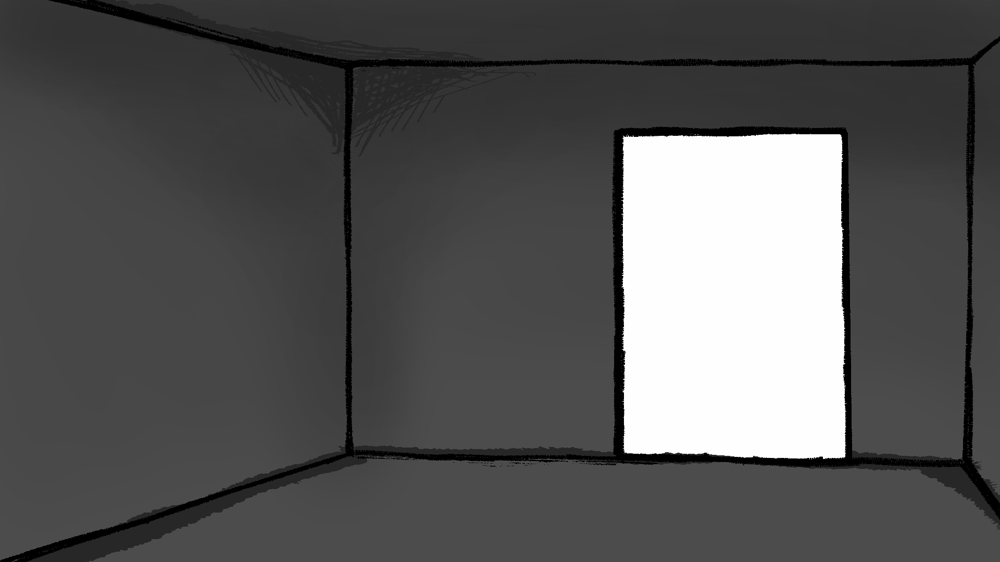<svg class=iext viewBox="0 0 700 1080" preserveAspectRatio="none" aria-hidden="true"><defs><linearGradient id=iwg x1=0 y1=0 x2=0 y2=1><stop offset=0 stop-color=#353535 /><stop offset=1 stop-color=#4b4b4b /></linearGradient></defs><rect width=700 height=1080 fill=url(#iwg) /><polygon points="0,0 0,76 700,-400 700,0" fill=#363636 /><polygon points="0,1080 0,989 700,1969" fill=#4c4c4c /><polyline points="0,76 700,-400" stroke=#000 stroke-width=7 fill=none /><polyline points="0,989 700,1969" stroke=#000 stroke-width=7 fill=none /></svg>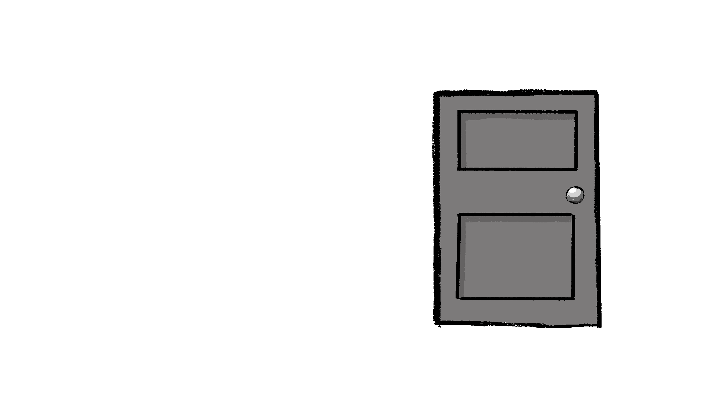
 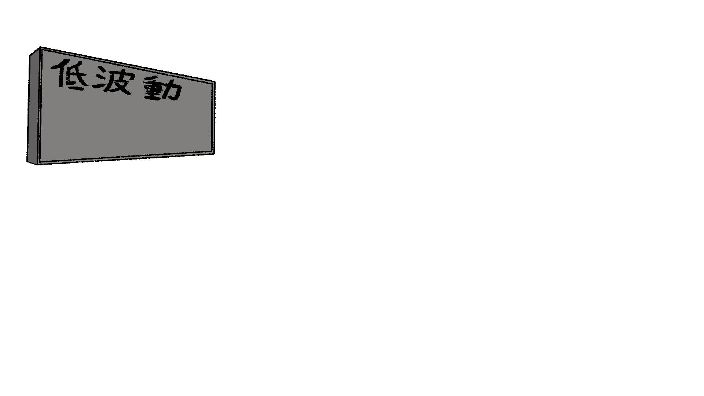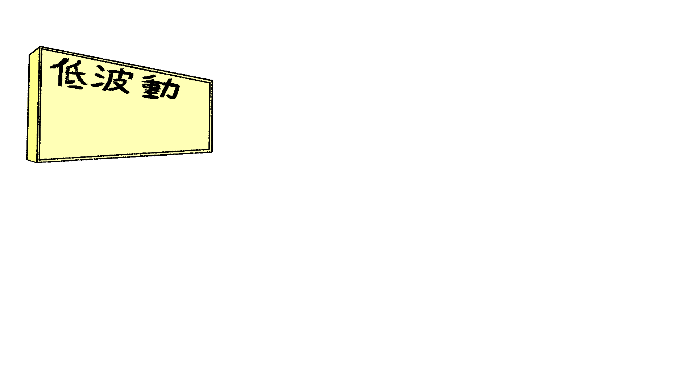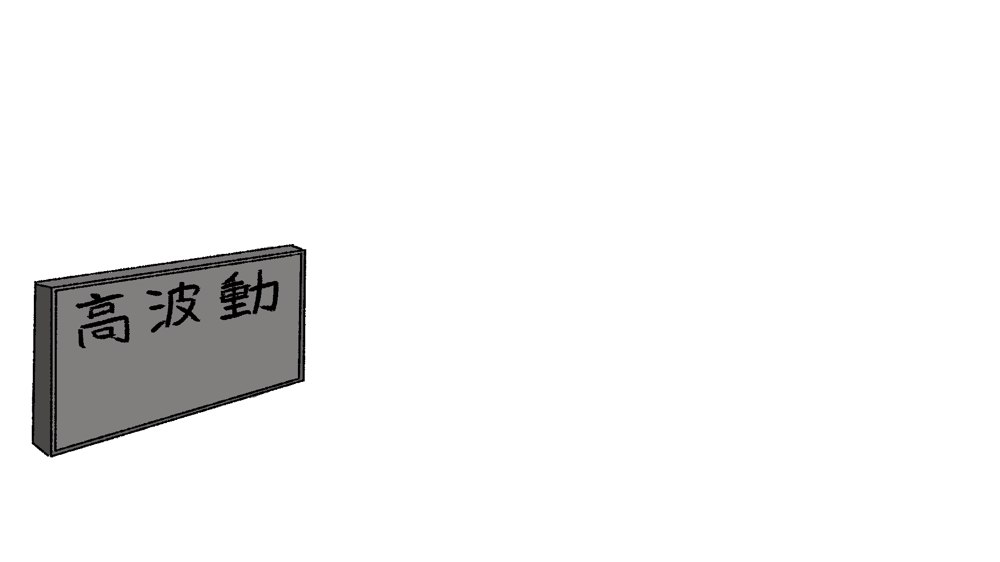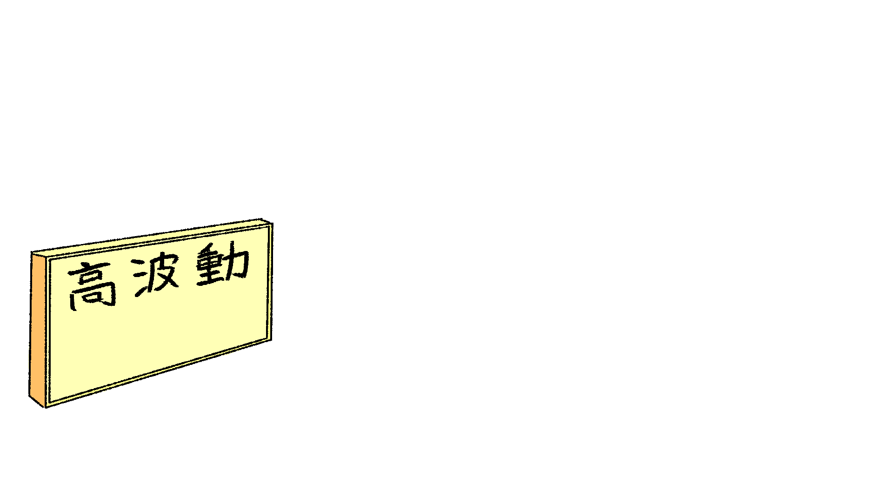
 <div class="stx fo" id=tlow></div>
 <div class="stx fo" id=thigh></div>
 <button class="hsp fo" id=hlow style="left:3.7%;top:11.7%;width:27%;height:31.6%" aria-label="選擇低波動"></button>
 <button class="hsp fo" id=hhigh style="left:3.2%;top:43.4%;width:27.4%;height:38%" aria-label="選擇高波動：哪有賭狗天天輸"></button>
 <button class=hsp id=hdoor style="left:61.2%;top:22%;width:24.1%;height:60.8%" aria-label="開門進入遊戲"></button>
 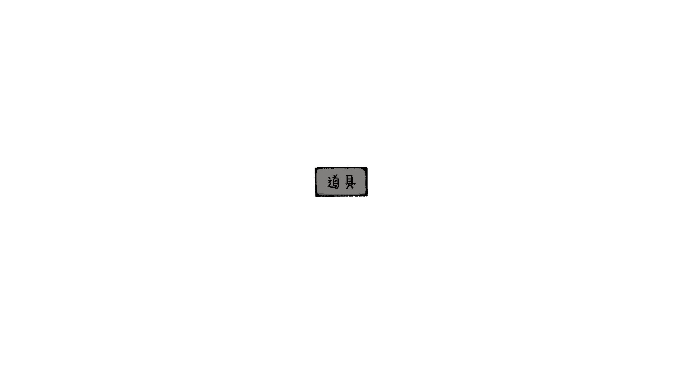
 <button class="hsp fo" id=itog style="left:44.6%;top:41.8%;width:8.8%;height:9.5%" aria-pressed=${IT} aria-label="道具：${IT?'開':'關'}"></button></div>
 <div class="imeta fo"><span>${esc(name)}（${pid}）・已玩 ${gno} 局・試玩${sess&&sess.pid===pid?'剩 '+mmss(sessLeft()):' '+(C.G/60)+' 分鐘'}・待同步 ${out.length} 筆</span><button id=rn>換玩家</button><button id=ex>匯出 CSV</button></div>
 <p class="ihint fo" id=ih role=status>選一個牌子，再按門進入</p></div></div>`;
 signText();const iw=$('.iw');
 const sel=m=>{pick=m;['low','high'].forEach(k=>{$('#l'+k).classList.toggle('on',k===m);$('#s'+k).classList.toggle('dim',k!==m);$('#t'+k).classList.toggle('dim',k!==m)});iw.classList.add('ready');$('#ih').className='ihint fo';$('#ih').textContent=(m==='low'?'低波動':'高波動（哪有賭狗天天輸）')+'・道具'+(IT?'開':'關')+'　→　按門進入'};
 $('#hlow').onclick=()=>sel('low');$('#hhigh').onclick=()=>sel('high');
 $('#itog').onclick=()=>{IT=!IT;ls.set('bk_item',IT);const t=$('#itog');$('#pon').classList.toggle('on',IT);t.setAttribute('aria-pressed',IT);t.setAttribute('aria-label','道具：'+(IT?'開':'關'));if(pick)sel(pick)};
 $('#rn').onclick=askName;$('#ex').onclick=csv;
 $('#hdoor').onclick=()=>{if(iw.classList.contains('go')||iw.classList.contains('quick'))return;if(sessOver()){$('#ih').className='ihint fo warn';$('#ih').textContent='這位玩家的 '+(C.G/60)+' 分鐘試玩時間已到，請按右上角「換玩家」';return}if(!pick){iw.classList.remove('shake');void iw.offsetWidth;iw.classList.add('shake');$('#ih').className='ihint fo warn';$('#ih').textContent='先選一個牌子（低波動或高波動）';return}
  iw.classList.remove('ready','shake');const m=pick;document.body.classList.add('portal');
  if(ls.get('bk_door')===pid){/* 這位玩家已經看過開門動畫：淡出後直接進遊戲 */iw.classList.add('quick');
   setTimeout(()=>{const B=document.body.classList;start(m,1).then(()=>{closeIntro();B.add('qin');setTimeout(()=>B.remove('qin'),800)})},500);return}
  ls.set('bk_door',pid);iw.classList.add('go');
  setTimeout(()=>start(m,1),1300);/* 門還關著時就在門後開始遊戲，打開門看到的就是遊戲畫面 */
  setTimeout(()=>document.body.classList.add('portal2'),2400);setTimeout(closeIntro,3350)}}
function showHome(){closeIntro();const d=m=>{const p=CFG[m];return`我的生命 ${p.L1_hp}／${p.L2_hp}／${p.L3_hp}（三關）。射自己空彈 +${p.a}；射惡魔實彈 +${p.b}、空彈 −${p.d}；過關 +${p.bonus}。每發 ${p.T} 秒。${IT?'道具每關 '+p.items+' 次。':''}`};
 app.innerHTML=`<h1>惡魔輪盤</h1><p>共三關。每關彈匣隨機排列，畫面會顯示剩餘的實彈與空彈數。</p><p>射自己：空彈得分並繼續，實彈則生命 −1。射惡魔：實彈得分且惡魔生命 −1；空彈扣分，惡魔會朝你開一槍。</p><p>超時自動射惡魔；每位玩家試玩 ${C.G/60} 分鐘，時間內可以玩很多局；時間到可以打完這一發，再按右上角按鈕結束。你的生命歸零就結束，惡魔生命歸零就過關。</p>
 <label class=tg><input type=checkbox id=itm ${IT?'checked':''}> 開啟道具：每關可以查看下一發是實彈還是空彈</label>
 <h2>你想玩哪一種？</h2><div class=md><b>低風險</b><p>${d('low')}</p><button class=main id=golow>用低風險開始</button></div><div class=md><b>哪有賭狗天天輸</b><p>${d('high')}</p><button class=main id=gohigh>用高風險開始</button></div>
 <button id=rn>更改名字（換玩家）</button><button id=ex>匯出 CSV</button><p>已玩 ${gno} 局，待同步 ${out.length} 筆。${sessOver()?'這位玩家的試玩時間已到，請按「更改名字（換玩家）」。':''}玩家：${esc(name)}（代號 ${pid}）。</p><p id=hs></p>`;
 $('#golow').onclick=()=>start('low');$('#gohigh').onclick=()=>start('high');$('#ex').onclick=csv;$('#rn').onclick=askName;$('#itm').onchange=e=>{IT=e.target.checked;ls.set('bk_item',IT);showHome()}}
async function start(m,ent){if(sessOver())return home();if(!sess||sess.pid!==pid){sess={pid,t0:Date.now()};ls.set('bk_sess',sess)}inGame=1;if($('#golow')){$('#golow').disabled=$('#gohigh').disabled=true;$('#hs').textContent='載入設定中…'}
 await Promise.race([cfgP,new Promise(r=>setTimeout(r,3000))]);apply(m);
 gno++;ls.set('bk_n',gno);gid=pid+'-'+gno;seq=0;itemMode=IT?'on:'+C.items:'off';gt=Date.now();cleared=0;s=null;quitted=0;log('game_start',{});lvl(1,0,ent)}
function lvl(n,sc,ent){if(quitted)return;hitAt=s&&s.hp===1&&C.lv[s.n-1].hp>1?Date.now()-2400:-1e9;s=newLevel(n,sc);s.it=IT?C.items:0;s.pk=-1;shot=0;if(n>1)resend(gid);const b=left(s);log('level_start',{level:n,live_left:b[0],blank_left:b[1],hp:s.hp,hc:s.hc,score_after:sc});if(ent){draw('',1,{ent:1});const st=$('.stage');setTimeout(()=>{if($('.stage')===st)draw('')},3100)}else draw('')}
const cls=f=>{const ps=f.aim==='self'||/^self/.test(f.a||''),pf=!ps&&(f.aim||f.a);return`${f.aim?'aim-'+f.aim:''} ${f.a?'a-'+f.a:''} ${f.r?'r-'+f.r:''} ${ps?'ps':pf?'pf':''} ${f.k?'kill':''} ${f.ent?'a-ent':''}`};
let hitAt=-1e9;
const im=(n,c)=>``;
['intro_bg','intro_door','intro_low','intro_high','intro_low_light','intro_high_light','intro_props_button','intro_props_button_light','back_hair','body','cape','face_1','face_2','face_3','blush1','blush2','eyebrows1','eyes1','eyes2','eyes3','eyeballs1','eyeballs2','eyeballs_for_eyes2','mouth1','mouth2','mouth3','mouth4','mouth5','mouth6','mouth8','table','gun_take','gun_aim','gun_self','demon_take','demon_shot','demon_hand1','demon_hand2','bg_pc','bg_phone','heart'].forEach(n=>{new Image().src='assets/'+n+'.png'});
const BL=m=>m===8?0:m===3?2:1;/* 嘴巴編號 → 腮紅編號 */
function face(f){if(f.pf){const g=Object.assign({},f);delete g.pf;return`<div class="ph fpre">${f.pf}</div><div class="ph fpost">${face(g)}</div>`}
 const n=s.n,F=C.faces,[l,b]=left(s),act=F.act[n-1],ph=(c,h)=>h?`<div class="ph ${c}">${h}</div>`:'',
 eyes=(e,bl)=>(e.ball?im(e.ball,(bl?'eo ':'')+'eb'):'')+im('eyes'+e.eyes,bl?'eo':'')+(bl?im('eyes1','ec'):'');
 if(f.a==='clkd'){/* 對惡魔開空槍：惡魔反擊的三個階段，嘴巴依序換 */
  const sp=f.r?[F.take[n-1],F.point[n-1],f.r==='live'?F.hit:F.miss[n-1]]:[F.take[n-1]],c=i=>f.r?'p'+(i+1):'';
  return im('face_'+n)+sp.map((e,i)=>BL(e.mouth)?ph(c(i),im('blush'+BL(e.mouth))):'').join('')+eyes(act,0)+im('eyebrows1')+sp.map((e,i)=>ph(c(i),im('mouth'+e.mouth))).join('')}
 const idle=!f.aim&&!f.a,nv=n===3&&s.hc===1&&b===0&&l>0&&f.a!=='selfl',
 e=f.a==='selfl'?Object.assign({},act,F.hit):nv?Object.assign({},F.idle[n-1],F.nerv):f.aim==='dev'?F.aimed:F.idle[n-1],bl=idle&&e.ball;
 return im('face_'+n)+(BL(e.mouth)?im('blush'+BL(e.mouth)):'')+eyes(e,bl)+im('eyebrows1')+im('mouth'+e.mouth)}
const scene=(f,pl)=>`<div class=scene><div class=dvs aria-hidden="true"><div class=dv>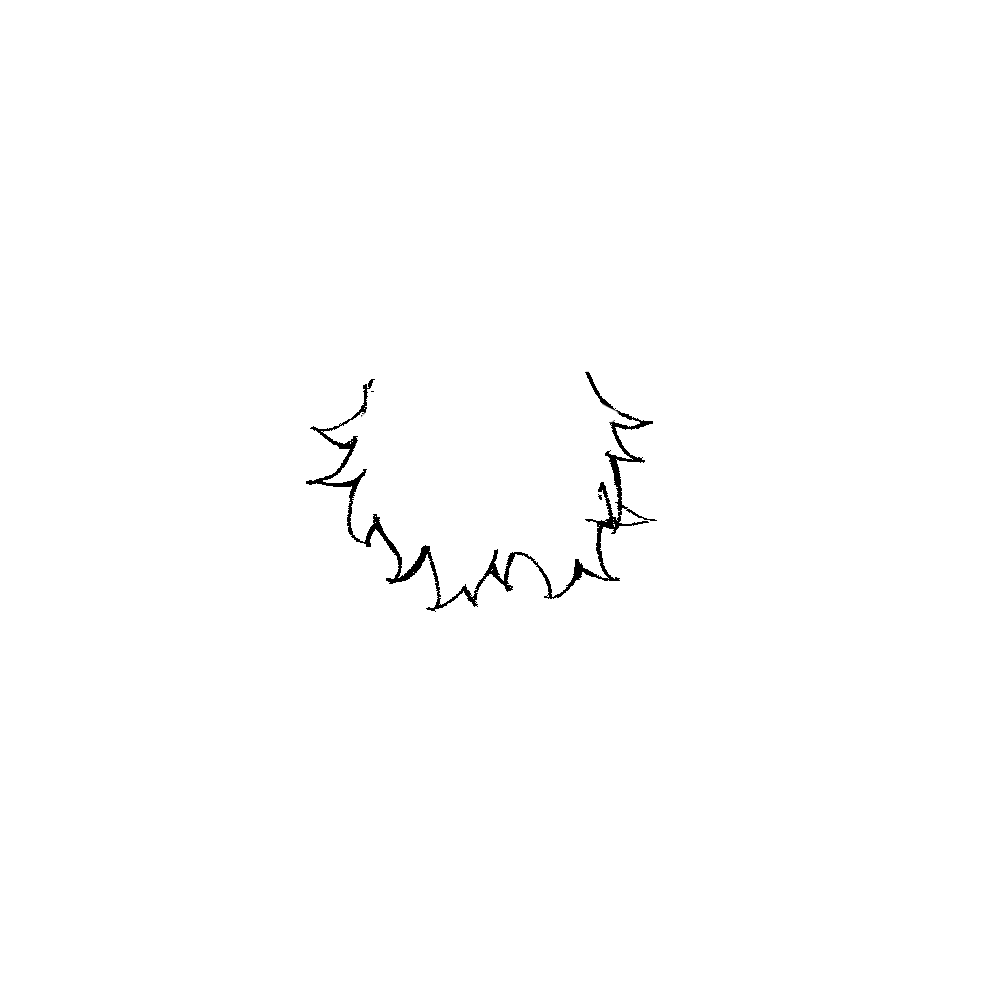${face(f)}</div></div><div class=dk></div><div class=tb>${pl}</div><div class=dhs aria-hidden="true">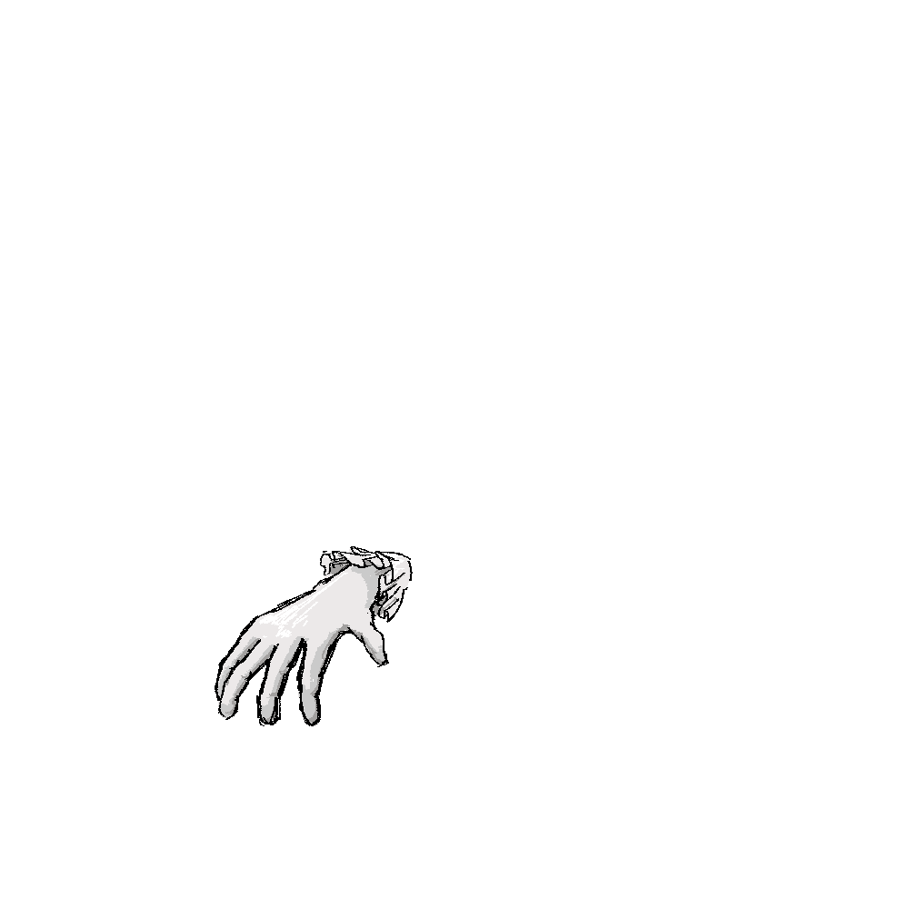</div><div class=gw><div class=w1>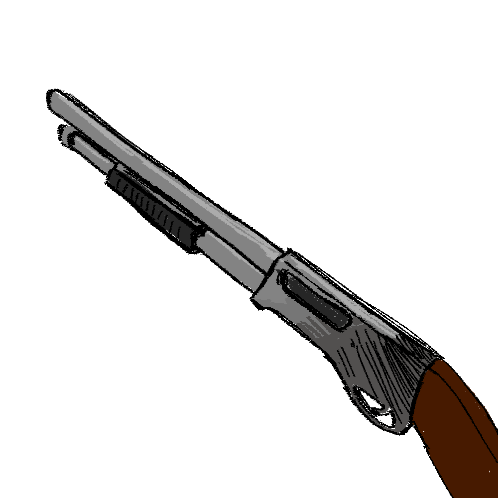</div><div class=w2></div><div class=w3></div></div></div>`;
const hearts=(n,m)=>Array.from({length:m},(_,i)=>`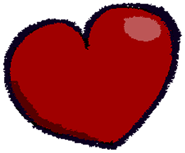`).join('');
function draw(msg,dis,fx){if(quitted)return;clearInterval(tm);let blood='';const[l,b]=left(s),f=fx||{},w=f.show||{},hurt=f.h0>s.hp,bd=hurt?(f.r?3.7:.1):0,
 pl=`<b class=n id=vb>${w.b??b}</b><b class=n id=vl>${w.l??l}</b><div class="hp hpd" role=img aria-label="惡魔生命 ${s.hc}">${hearts(s.hc,C.lv[s.n-1].hc)}</div><div class="hp hpm" id=vhp role=img aria-label="我的生命">${hearts(w.hp??s.hp,C.lv[s.n-1].hp)}</div><div class=inf><span>關卡 ${s.n}/3</span><span>分數 ${s.score}</span></div>`;
 if(hurt)hitAt=Date.now()+bd*1000;
 /* 中彈：一圈半透明血跡。剩 1 滴血時一直留著；否則約 6 秒內慢慢消散（跨畫面重繪也會接續） */
 if(s.hp===1&&C.lv[s.n-1].hp>1)blood=`<div class="blood stay" style="animation-delay:${hurt?bd:-1}s,${hurt?bd:0}s"></div>`;
 else if(s.hp>1&&Date.now()-hitAt<6000)blood=`<div class="blood fade" style="animation-delay:${(hitAt-Date.now())/1000}s"></div>`;
 app.innerHTML=`<div class="stage ${cls(f)}"><div class=world>${scene(f,pl)}<button class=quit id=bq>結束遊戲</button><div class=top><div class=bar><span id=bar style="width:100%"></span></div><span id=tl>${dis?'':C.T+' 秒'}</span></div>${blood}<div id=msg>${msg}</div>${dis?'':'<div class=btns><button class=main id=bs>射自己</button><button id=bc>射惡魔</button></div>'+itemUI()}</div><div class=ov></div><div class=gl></div></div>`;
 $('#bq').onclick=quit;tuMark();if(dis)return;$('#bs').onclick=()=>act('s');$('#bc').onclick=()=>act('c');if($('#bi'))$('#bi').onclick=peek;t0=Date.now();
 tm=setInterval(()=>{const r=Math.max(0,C.T-(Date.now()-t0)/1000);$('#tl').textContent=Math.ceil(r)+' 秒｜'+(sessOver()?'試玩時間到':'試玩剩 '+mmss(sessLeft()));$('#bar').style.width=r/C.T*100+'%';if(r<=0)act('c',1)},100)}
/* ---- 音效：第一次點擊後才能播放（手機瀏覽器的限制） ---- */
let VOL=(()=>{const v=Number(ls.get('bk_vol'));return ls.get('bk_vol')==null||isNaN(v)?.8:Math.min(1,Math.max(0,v))})();/* 音效音量 0～1，左下角可調，記在這台裝置上 */
const SN=['shut_player','shut_demon','loaded','dry_fire','ears_ringing','heartbeat'],SFX={},AEL={};let AC=null;
SN.forEach(n=>{try{const a=new Audio('assets/'+n+'.mp3');a.preload='auto';AEL[n]=a}catch(e){}});
function unlock(){try{if(!AC){AC=new(window.AudioContext||window.webkitAudioContext)();SN.forEach(n=>fetch('assets/'+n+'.mp3').then(r=>{if(!r.ok)throw 0;return r.arrayBuffer()}).then(b=>new Promise((ok,no)=>AC.decodeAudioData(b,ok,no))).then(d=>{SFX[n]=d}).catch(()=>{}))}
 if(AC.state!=='running')AC.resume();const b=AC.createBufferSource();b.buffer=AC.createBuffer(1,1,22050);b.connect(AC.destination);b.start()}catch(e){}}
/* 先用 Web Audio（延遲低）；還沒載好或不支援時改用 <audio> */
function sfx(n){try{if(AC&&SFX[n]&&AC.state==='running'){const b=AC.createBufferSource();b.buffer=SFX[n];const g=AC.createGain();g.gain.value=VOL;b.connect(g);g.connect(AC.destination);b.start();return}
 const a=AEL[n];if(a){const c=a.cloneNode();c.volume=VOL;c.play().catch(()=>{})}}catch(e){}}
['pointerdown','touchend','click','keydown'].forEach(t=>document.addEventListener(t,unlock,true));
/* 左下角音量 */
(function(){const w=document.createElement('div');w.className='vol';w.innerHTML=`<button id=vmute aria-label="靜音"></button><input id=vr type=range min=0 max=100 step=5 aria-label="音效音量"><span id=vp aria-hidden=true></span>`;document.body.appendChild(w);
 const r=w.querySelector('#vr'),b=w.querySelector('#vmute'),pc=w.querySelector('#vp');let last=VOL||.8;
 const ic=v=>`<svg viewBox="0 0 24 24" width=18 height=18 aria-hidden=true><path d="M4 9h4l5-4v14l-5-4H4z" fill=currentColor />${v>0?'<path d="M16 8.5a5 5 0 0 1 0 7" stroke=currentColor stroke-width=2 fill=none stroke-linecap=round />':'<path d="M16 9l5 6M21 9l-5 6" stroke=currentColor stroke-width=2 stroke-linecap=round />'}${v>.5?'<path d="M18.5 6a8.5 8.5 0 0 1 0 12" stroke=currentColor stroke-width=2 fill=none stroke-linecap=round />':''}</svg>`;
 const set=(v,save)=>{VOL=v;r.value=Math.round(v*100);pc.textContent=Math.round(v*100)+'%';b.innerHTML=ic(v);b.setAttribute('aria-label',v>0?'靜音':'取消靜音');if(save)ls.set('bk_vol',v)};
 set(VOL);r.oninput=()=>set(r.value/100,1);r.onchange=()=>{if(VOL>0){last=VOL;sfx('dry_fire')}};
 b.onclick=()=>{if(VOL>0){last=VOL;set(0,1)}else{set(last||.8,1);sfx('dry_fire')}}})();
/* ---- 動態的動畫以每秒 24 格播放（時間長度不變，只是畫面像手繪動畫一格一格跳） ---- */
const FPS=24,STEP=new Set(['nod','sway','adn','asn','rc','rcs','idle','ck','tr','ret','ent','hnd','sh','tilt','ln','izoom','ipush','iopen','ishake','gunup','gunrise','grab']);
(function q(){const now=performance.now();try{document.getAnimations().forEach(a=>{if(!STEP.has(a.animationName))return;
 if(!a._q){a._q=now-(a.currentTime||0);a.pause()}a.currentTime=Math.floor((now-a._q)*FPS/1000)*1000/FPS})}catch(e){}requestAnimationFrame(q)})();
/* ---- 道具：查看下一發 ---- */
const pkHTML=()=>`<div class="itm pk ${s.sh[s.i]?'lv':'bk'}" role=status>下一發是 <b>${s.sh[s.i]?'實彈':'空彈'}</b></div>`;
function itemUI(){if(!IT||s.i>=s.sh.length)return'';if(s.pk===s.i)return pkHTML();return s.it>0?`<button class=itm id=bi>查看下一發（剩 ${s.it} 次）</button>`:''}
function peek(){if(!s.it||s.pk===s.i||s.i>=s.sh.length)return;s.it--;s.pk=s.i;const b=left(s);
 log('item',{level:s.n,shot_no:shot+1,live_left:b[0],blank_left:b[1],hp:s.hp,hc:s.hc,score_before:s.score,actor:'player',action:'peek',result:s.sh[s.i]?'live':'blank',score_after:s.score,item_left:s.it,dec_time:Math.min(C.T,(Date.now()-t0)/1000).toFixed(2)});/* 道具列的 dec_time＝這一發開始到按下道具的秒數 */
 const e=$('#bi');if(e)e.outerHTML=pkHTML()}
function act(a,to){if(quitted)return;clearInterval(tm);sfx('loaded');const dt=Math.min(C.T,(Date.now()-t0)/1000);draw('瞄準中…',1,{aim:a==='s'?'self':'dev'});setTimeout(()=>fire(a,to,dt),1500)}
function fire(a,to,dt){if(quitted)return;const pk=s.pk===s.i?(s.sh[s.i]?'live':'blank'):'',pre=a==='c'?face({aim:'dev'}):'',b=left(s),sb=s.score,hp=s.hp,hc=s.hc,ev=shoot(s,a),m=[];
 if(to)m.push('超時，自動射惡魔。');
 ev.forEach((e,j)=>{log('shot',{level:s.n,shot_no:++shot,live_left:b[0],blank_left:j?b[1]-1:b[1],hp,hc,score_before:j?ev[0].sc:sb,actor:e.actor,action:j?'retaliate':to?'timeout_computer':a==='s'?'self':'computer',result:e.x?'live':'blank',score_after:e.sc,dec_time:j?'':dt.toFixed(2),timeout:to?1:0,peeked:j?'':pk,item_left:j?'':s.it});
  m.push(j?`惡魔反擊：${e.x?'實彈，你的生命 −1':'空彈'}。`:e.tgt==='self'?`對自己開槍：${e.x?'實彈，生命 −1':'空彈，+'+C.a+' 分'}。`:`對惡魔開槍：${e.x?'實彈，+'+C.b+' 分，惡魔生命 −1':'空彈，−'+C.d+' 分'}。`)});
 const r=fin(s),e0=ev[0],e1=ev[1],fx={a:e0.tgt==='self'?(e0.x?'selfl':'selfb'):(e0.x?'hitd':'clkd'),r:e1?(e1.x?'live':'blank'):'',h0:hp,k:r==='clear'},full=m.join('<br>');if(fx.a==='hitd')fx.pf=pre;
 /* 結果在開槍那一刻才揭曉：反擊前只顯示玩家這一發之後的狀態 */
 if(e1)fx.show={hp,l:b[0],b:b[1]-1};else if(fx.a==='selfl')fx.show={hp};
 draw(e1?m.slice(0,-1).concat('惡魔拿起了槍…').join('<br>'):full,1,fx);
 if(fx.show){const st=$('.stage');setTimeout(()=>{if($('.stage')!==st)return;const[l2,b2]=left(s);$('#vhp').innerHTML=hearts(s.hp,C.lv[s.n-1].hp);$('#vl').textContent=l2;$('#vb').textContent=b2;$('#msg').innerHTML=full},e1?(e1.x?3660:3750):60)}
 const gl=(q0,x,y,z,c)=>{const e=$(q0),g=$('.gl'),wd=$('.world');if(!e||!g||!wd)return;const q=e.getBoundingClientRect(),W=wd.getBoundingClientRect(),d=Math.min(W.width,W.height)*z,R=Math.random,n=9+Math.floor(R()*5),P=[],Q=[];let a=R()*6.28;
  for(let k=0;k<n*2;k++){const o=k%2===0,r=o?58+R()*42:20+R()*22;a+=6.2832/(n*2)*(.55+R()*.9);P.push((Math.cos(a)*r).toFixed(1)+','+(Math.sin(a)*r).toFixed(1));Q.push((Math.cos(a)*r*.5).toFixed(1)+','+(Math.sin(a)*r*.5).toFixed(1))}
  g.innerHTML=`<svg viewBox="-100 -100 200 200"><defs><radialGradient id=fg><stop offset=0 stop-color=#fff /><stop offset=.4 stop-color=#fff3c4 /><stop offset=.75 stop-color=#ffb04a stop-opacity=.85 /><stop offset=1 stop-color=#ff7a1a stop-opacity=0 /></radialGradient><filter id=fb x=-20% y=-20% width=140% height=140%><feGaussianBlur stdDeviation=2.2 /></filter></defs><polygon points="${P.join(' ')}" fill=url(#fg) filter=url(#fb) /><polygon points="${Q.join(' ')}" fill=#fff opacity=.92 filter=url(#fb) /></svg>`;
  g.style.cssText=`left:${q.left+q.width*x}px;top:${q.top+q.height*y}px;width:${d}px;height:${d}px;rotate:${Math.floor(R()*360)}deg`;g.classList.add(c)};
 if(fx.a==='selfl')gl('.w3 img',.53,.93,1,'go');if(fx.a==='hitd')gl('.w2 img',.19,.46,.3,'gd');if(fx.a==='selfl')sfx('shut_player');/* 耳鳴：玩家中彈、黑畫面開始變亮時（死亡就不會變亮，不播） */if(r!=='dead'&&(fx.a==='selfl'||fx.r==='live')){const st=$('.stage');setTimeout(()=>{if($('.stage')===st){sfx('ears_ringing');sfx('heartbeat')}},(fx.r==='live'?3600:0)+1340)}if(fx.a==='hitd')sfx('shut_demon');if(fx.a==='clkd'||fx.a==='selfb')sfx('dry_fire');if(fx.r==='blank'){const st=$('.stage');setTimeout(()=>{if($('.stage')===st)sfx('dry_fire')},3600)}if(fx.r){const st=$('.stage');setTimeout(()=>{if($('.stage')===st)sfx('loaded')},2100)}if(fx.r==='live')setTimeout(()=>{sfx('shut_player');const o=$('.ov');if(o)o.classList.add('on');gl('.dhs .h2',.415,.58,1,'go')},3600);setTimeout(()=>r?end(r):draw(''),r==='dead'?(fx.r?4700:1000):fx.a==='hitd'?(fx.k?500:3100):fx.r==='live'?6100:fx.r?5100:fx.a==='selfl'?2500:1300)}
function end(r){if(quitted)return;log('level_end',{level:s.n,end_reason:r,score_after:s.score,hp:s.hp,hc:s.hc});
 if(r==='dead')return over('dead');cleared++;if(s.n===3)return over('clear');
 const h=`<div class="fin clr"><div><h1>第 ${s.n} 關通過</h1><p>通關 +${C.bonus} 分，目前 ${s.score} 分。下一關生命會重設。</p></div></div>`,st=$('.stage');
 if(st)st.insertAdjacentHTML('beforeend',h);else app.innerHTML=h;/* 顯示 2 秒後自動淡出，進入下一關 */
 const n=s.n,sc=s.score;setTimeout(()=>{const f=$('.fin.clr');if(f)f.classList.add('out');setTimeout(()=>lvl(n+1,sc,1),500)},2000)}
/* 右上角「結束遊戲」：按第一次變成確認，3 秒內再按一次才結束 */
function quit(){const b=$('#bq');if(!b||quitted)return;if(sessOver())return tmo();if(!b.classList.contains('cf')){b.classList.add('cf');b.textContent='再按一次確定結束';setTimeout(()=>{if(b.isConnected){b.classList.remove('cf');b.textContent='結束遊戲'}},3000);return}
 clearInterval(tm);log('level_end',{level:s.n,end_reason:'quit',score_after:s.score,hp:s.hp,hc:s.hc});over('quit');quitted=1;inGame=0}
function tmo(){if(quitted||!s)return;clearInterval(tm);log('level_end',{level:s.n,end_reason:'timeout',score_after:s.score,hp:s.hp,hc:s.hc});over('timeout');quitted=1}
function over(r){if(quitted)return;inGame=0;const ti=r==='clear'?'全部通關':r==='timeout'?'試玩時間到':r==='quit'?'提前結束':'遊戲結束';
 log('game_end',{end_reason:r==='clear'?'clear_all':r==='timeout'?'timeout':r==='quit'?'quit_L'+s.n:'dead_L'+s.n,final_score:s.score,levels_cleared:cleared,total_time:Math.round((Date.now()-gt)/1000)});resend(gid);flush();
 app.innerHTML=`<div class="fin ${r==='dead'?'slow':''}"><div><h1>${ti}</h1><p>${sessOver()?(C.G/60)+' 分鐘試玩時間結束。':''}最終分數 ${s.score}，通過 ${cleared} 關。</p>${sessOver()?'<button class=main id=nx2>換下一位玩家</button>':''}<button ${sessOver()?'':'class=main '}id=ok>回到首頁</button></div></div>`;$('#ok').onclick=home;if($('#nx2'))$('#nx2').onclick=askName}
/* ---- 模擬模式：網址加 ?sim=A 或 ?sim=B（可加 &n=20000）---- */
function simPage(k){const n=+(/n=(\d+)/.exec(location.search)||[0,20000])[1],o={c:[0,0,0],tot:0,all:0,p1:{}};
 for(let g=0;g<n;g++){let sc=0,lv=0;for(let m=1;m<=3;m++){const x=newLevel(m,sc);while(!state(x))shoot(x,bot[k](x));const r=fin(x);sc=x.score;if(m===1)o.p1[sc]=(o.p1[sc]||0)+1;if(r!=='clear')break;o.c[m-1]++;lv++}o.tot+=sc;if(lv===3)o.all++}
 const th=TH[k],xs=[...new Set(Object.keys(o.p1).concat(Object.keys(th)))].sort((a,b)=>a-b);
 app.innerHTML=`<h1>模擬：策略 ${k}</h1><p>${n} 局，資料來源為模擬，不會上傳。</p><p>第一關通關率 ${(o.c[0]/n).toFixed(3)}，連過兩關 ${(o.c[1]/n).toFixed(3)}，整局通關 ${(o.all/n).toFixed(3)}，平均總分 ${(o.tot/n).toFixed(2)}</p><table><tr><th>第一關得分</th><th>模擬</th><th>理論</th></tr>${xs.map(x=>`<tr><td>${x}</td><td>${((o.p1[x]||0)/n).toFixed(3)}</td><td>${(th[x]||0).toFixed(3)}</td></tr>`).join('')}</table>`}
const sm=/sim=([AB])/.exec(location.search);sm?simPage(sm[1]):home();
</script></body></html>
